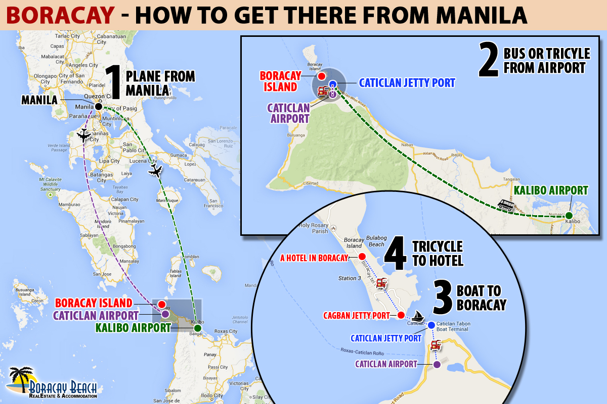

How to Get to Boracay
There are so many ways to get to Boracay
The best way to get there is by taking a flight from Manila, then another flight to Caticlan, and jump on board one of the boats.
If you are on a budget, another way is to travel by ferry. Although this will save you money, it will definitely cost you time.
